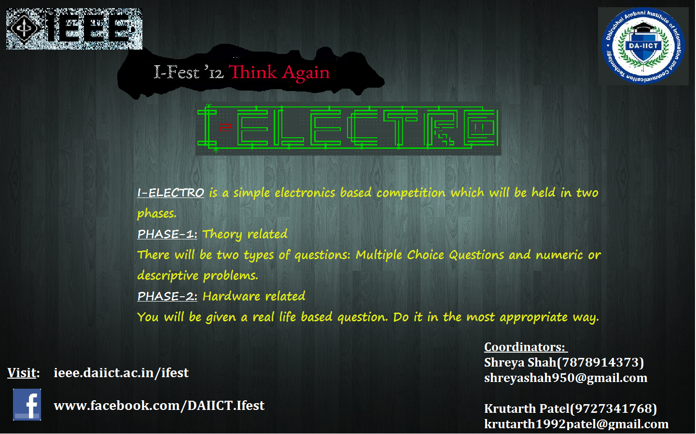

Arduino Workshop
This is the place to be for all you robotics lovers. You thought making a robot is rocket science and so you just dropped the idea, but believe us, making robots with Arduino is so simple that anyone even without any programming or electronics background can do it !
So, i.Fest '12, DA-IICT brings to you this workshop which will give you a headstart in making robots and in just ONE DAY you will have learnt how to make your own line-follower bot right from scratch.
The the circuits, the physics, the logic and the code everything would be done by you and we will help you crack it all by yourself !!!
The details of the workshop are as follows:
Topics to be covered:
Kit (Optional) details:
Other Details:
Last Date for Registration: October 1st, 2012Date : October 2nd, 2012
Team : Maximum 5 members in a team, one kit per team.
Fees (includes registration fee for ifest):
100/- IEEE Members
150/- Non-IEEE Members
2500/- Kit (optional)
Coordinators:
For registration contact:Om Thakkar (H-104) - 9904014373
Vani Alumkrutha (J-217) -9173184984
Ankit Naugariya (G-207) - 9723880075
SixthSense Botz
Ever wondered why we humans can see things around us, and differentiate between colors which the machines fail to do?
Now, get ready for a workshop called “SixthSense Botz” which will answer all your questions and leave you with
a memorable experience to connect the interface digital world with physical world. For the forthcoming iFest Season,IEEE student branch DA-IICT in collaboration with ARK Technologies brings you a 2 day workshop which will teach you:
All these days the participants would have used traditional sensors like IR, ultrasonic, LDR sensors etc. which were used for sensing an obstacle or light, but these sensors where never able tell the robot the color of the light or the type of obstacle present in front of the robot. In this two day workshop, using a camera, the robot will be able to tell what the robot is sensing.
Other Details:
SixthSense Botz by ARK Technosolutions
Coordinators:
For registration contact:Ankita Mehta (K-308) – 9979641775
Vani Alumkrutha (J-217) -9173184984
Ankit Naugariya (G-207) - 9723880075
I.Capture
“You don’t take a photograph, you make it.”
~Ansel Adams
Click it to win it
Event Description:-
This is an online photography competition where the participants are required to submit their self-clicked photographs to the specified email address.
The entries would be judged on the following criteria’s:-
1)Creativity
2)Originality
You can submit under more than one category.
All the participants are encouraged to submit their photographs even if they don’t fall under any of the categories.
Categories:-
1)Details and Macro: - Getting in close is the name of the game for this category. We welcome pictures of small details that suggest a larger story. This is also the place for macro photographs (although a macro image of a flower might equally go into the Flowers category).
Details might include a knot, a lock, or an abstract close-up. Anything goes as long as it is a tight composition of a detail. Macro - flowers, insects, stamps, ice crystals, etc.
2)College Campus
So get your gear and memory cards …CLICK ON…!!!!
Important Dates and information:-
Submission Starts From: - 12th Sept, 2012(Sunrise)
Last date For Submission:-4th Oct, 2012(2400 hrs)
Format of Submission (zip file): - ID-NAME-CATEGORY
Ex:- 201112044-Abhishek-Nature
Rules and Regulations:-
1)Entrants can submit maximum of 5 Photographs
2)Entrants can submit under more than one category but remember to send different mails i.e. one mail cannot contain images from both the categories.
3)Entrants must have captured and created the original exposure.
4)Mail your photos along with your ID, Name, Phone No, College Name and Location.
5)Entrants must agree to the rule that all the photographs submitted, belongs to the icapture group, from the day of the submission and can be used for publications, printed material, electronic media or any promotional purpose.
6)Normal and minor processing of RAW images such as brightness, contrast, lights and cropping is allowed. Any such object which belongs/doesn’t belong to the original click cannot be added/ removed.
6)No watermarks or texts on photos.
7)No obscene photographs would be accepted.
8)Photographs should not malign any caste, creed, religion or sex.
9)In case of any discrepancy the entrants must adhere to judge’s decision.
Prize Amount: - Rs.2000 (liable to change)
Mail your entries to:-
ifestatdaiict@gmail.com
Or
You can hand it to us personally in a pen drive, CD/ DVD at our respective rooms.
Coordinators:-
Kartikeya(9016330235)
Room No.- D-302
Abhishek Verma(7567277881)
Room No.- D-319
Rajan Anil Mistry(8866671559)
Room No.- D-318
I.Design
“DESIGN IS MORE THAN A SASSY TYPEFACE.”
Event Description:-
This is an online poster competition where the participants are required to submit their self-designed posters to the specified email address.
The entries would be judged on the following criteria’s:-
1)Creativity
2)Original
All the participants are encouraged to submit their posters.
THEME:
1)Think Again
2)Innovation
3)Science
Judging Criteria:
Some of the Posters would be selected from all entries and would be uploaded on facebook page and Winner would decided by Judge and number of likes on his/her poster, at last decision of Judge would be final.
Team size : 2
Important Dates and information:
Submission Starts From: - 12th Sept, 2012.
Last date For Submission:-5th Oct, 2012(24:00 hrs)
Format of Submission : - ID-NAME-THEME
Ex: - 201001206-Naman-Think Again
“Design is capturing what is most elusive.”
Rules and Regulations:-
Prize Amount: - Rs.1500 (liable to change)
Mail your entries to:-
idesign.ifest2012@gmail.com
Or
You can hand it personally in a pen drive, CD/ DVD in respective room.
Voting
Please like your favourite poster in the album 'I-Design' on the facebook page and help us choose the best poster!!!!!
Coordinator:-
Naman Gupta(8000276347)
Room No.-H-106
201001206
C Up Your Skills and I.Debug
A multiple choice questionnaire is to be answered by participants which will test their logical reasoning and their grip on the C programming language. It will contain varying level questions of various types like finding the error, predict the output and some generic conceptual questions. Participants would have to answer 25 questions in an hour. Date: 7th Oct
Rules and Regulations
WINNERS WILL BE DECIDED ON THE BASIS OF THE HIGHEST SCORE OBTAINED IN THE QUESTIONNAIRE PROVIDED.
Important Note
Coordinators:-
Om Thakkar(9904014373)
Sharan Shodhan(9737073420)
I.Decipher
“Brain: an apparatus with which we think we think.”
If visual cues and neuron twisting questions lead to a sudden surge of impulses in your cerebral cortex, then you are at the right place. This i-fest, we are taking quizzing to an all new level. Do your best to find the elusive link and fill in the tantalizing blanks.
So Get ready and brush up your fundas!!
Because brain is the best weapon to use!!!
Event structure:
The round consists of 20 - 25 questions and the participants have to crack the questions one after the other. The duration of the event will be 90 minutes. If a participant is unable to answer a question he/she will have an option to skip the current question and proceed to the next question but, it can’t be reviewed.For more details about the event move to the RULES page. Event will be held on 3rd Oct. So register at http://ieee.daiict.ac.in/ifest/decipher2012/, play and win lots of prizes.
Rules:-
Coordinators:-
Prateek Agarwal(7878778830)
Vipul Garg(7878779783)
I.Funda
“The Big Bang Query”
If you are very great fan of Ramanujan or Einstein and consider yourself as a master in Maths or Physics, then we are providing you the perfect opportunity to participate in our online quiz contest and win exciting prizes.
i.Funda is the Online quiz contest where you can win prizes by just answering multiple choice quiz questions. Questions will be asked from the fields of Maths and Physics and will mostly be conceptual. So we are providing you a wonderful opportunity to test your knowledge. If you think you are master in any of the above fields or slightly better than average, then you can surely win a prize.
Register yourself asap at http://ieee.daiict.ac.in/ifest/funda2012.
Visit the page for updates.
Event Structure:-
i.Funda is an individual event
Tentative Prizes : 2000/-
Date : 5th Oct 10pm - 11pm
Coordinators:-
Nitin Sachdeva(9376516001)201001060@daiict.ac.in
Prashu Chaudhary(7878778867)
201001136@daiict.ac.in
B2B
What is B2B?
Entrepreneurship is often the most difficult but also the most courageous and risk taking decision in an individual’s life. An efficient and practical Business plan leads an Entrepreneur to the path of success. We are organizing this event B2B(under i.fest 2012)encouraging students to come up with an innovative business plan.
Event Structure:
B2B will be organised in two phases:
Phase I: Submission of Executive Summary Executive Summary is considered to be the most important part of a Business Plan. It summarizes the business proposition, key financial projections, where the business stands at present and elements that are critical for success.
Phase II: Final Presentation of the B-Plan Top five teams selected by our judges would be called to DA-IICT to present their complete Business Plan in front of a panel of judges who would decide the winner based on various aspects of a running a successful business.
Schedule
11/9/2012- Registrations open at i.fest website.
27/9/2012 - Final Deadline for the online submission of the Executive Summary (Phase-I Ends)
1/10/2012 - Declaration of top 5 teams(Result of Phase-I)
6/10/2012 – Final Presentation/ Phase -II
Rules and regulations:
Guidelines:
In case of any query you can drop a mail to b2b.fest2012@gmail.com. Only genuine queries will be entertained.
Results of Phase 1:
Team 1:- Aditi Agarwal, Bhavya Bhansal, Komal Patel
Team 2:- Yash Kumbhani, Divy Thakkar
Team 3:- Paresh Vadhvani, Aditi Bhatnagar, Amisha Singla
Team 4:- Krishna Mahajan, Amandeep Singh Ghai
Coordinators:-
Harsh Thakkar(8866352906)
Siva Sankar(7359473324)
I.Vision
Have you ever had that Eureka moment but could not capitalize on it? With iVision, we provide you a platform to share your vision. It is a chance to finally pull the cloth off the ground-breaking idea you have been hiding in your mind for so long. Right from developing a new mobile app to finding a new source of renewable energy, the idea can be of anything which promises to solve problems faced by society or which has the potential to bring in positive change. So it is time to put on your thinking cap and step forward for the cause of humanity. What's more? You will be handsomely rewarded for your ideas!
If you think you live in a perfect world, THINK AGAIN!
What's up for grabs?
1) The top ideas of iVision (selected for phase 2) stand a chance to be incubated i.e the ideas will be financially funded, mentored by experts and patented in the students' names so that they can materialize.
2) Cash prizes (3500 plus) and goodies
Event Structure:
The event will be conducted separately for school and college students. There will be 2 phases.
Phase 1:
Students will have to submit an abstract for their idea. The abstract should give
1) an over view of the idea,
2)how will it impact society,
3)what resources it will require
4)who will benefit from it
The abstract has to be a Microsoft Word document or any other text file (Notepad, WordPad, pdf). It should also contain the names contact details of the participants. The abstract should be sent via email.
Email address: ideas.ivision2012@gmail.com
Deadline: 2nd October
Group size: Minimum 1 to Maximum 3
Phase 2:
15 Short-listed ideas from Phase 1 will have to be presented at DA-IICT during iFest 2012 on 7th Oct. The presentation should be a detailed and enhanced version of the abstract. Details regarding how the idea is supposed to be implemented will have to be provided in the presentation. Participants will be judged by experts from the academia and industry.
Rules and Regulations:
Link for iVision poster-school
{kind=link}
Link for iVision poster-college
{kind=link}
Link for iVision facebook page
Times of India covers iVision
This is your chance to be the innovators of tomorrow, today!
Coordinators:
Jineet Doshi- 9727188990
Shivang Bhatt- 9898985307
I.Database
From Facebook to Krogers to your mobile phones, databases are everywhere! Here’s your chance to model real life situations and re-envision database design. From the nitty gritties of the trivialest relationships, to the largest tables, design your way through the given scenarios.
Think different, Think again and get going for i.Database design!
Problem Statement and Rules:
Please refer to the following link for the problem statement and the rules.
Deadline: 5th October 2012 till 6pm
Submissions: Submit at i.database12@gmail.com
Date: Scheduled on 6th October 2012
Team Size: Max 2 members
New to databases??? Here are a few links to start off!!!
Prize money: Cash prizes worth 2500(Total)
Results:
The results of i-Database are:
1st Prize - Bhavya and Aditi
2nd Prize - Saranya
Coordinators:
Rini Joshi (9913876860)
I.App
Have you ever wished to create a mobile app of your own or making some improvements in the existing apps that you use. You may also have thought about making desktop applications such as games, puzzles or some tutorial sort of thing using applets. Sometimes we get a very innovative idea for making a web application whose existence we wished.
So, how about bringing these ideas out of your minds and implementing them in reality???
All sort of applications are allowed like :
Rules:
1. Team Size upto 32. Application Demo is must. Participants are expected to bring their own devices to give the demo.
3. Judgement will be based upon various factors like innovation, usability, ease of use etc.
4. The decision of the judges would be final.
5. If there will be more than 5 entries, there would be an elimination round.
Registration :
Submission format:
Participant will have to send Binaries, Source code and Documentation in a zip file on email address iapp.ifest.daiict@gmail.comFor more details, please go through this presentation.
Coordinators:
Palak Shah(9510944316)Arpita Agrawal(9510296540)
Shubhanshu Gupta(7359473626)
Any queries regarding the event can be posted on iapp.ifest.daiict@gmail.com
I.Code
Event Description:
Event Duration : Contest will remain open for 6 hrs. Preferable timings: from 6:00 pm till midnight.Date:4th Oct
Event Location : Participants don't have to be present at any venue per se. They can participate in the contest from any location. However, since the first year students do not have laptops, they can use one of the labs. The coordinators will be present in the lab to guide them. There is no compulsion for students to stay in the lab during the contest hours.
Event Structure : There will be only one round. A total of 7 programming problems will be hosted on spoj.pl. Cash prizes for the top 3 participants. One additional prize for the best coder from the first year.
Contest is open for all the participants of iFest. If you have not participated in iFest, you can still attempt the contest problems, but you will not be eligible for the prizes.
Event Rules : Code plagiarism will lead to direct disqualification from the contest. The coordinators have access to all the codes submitted, and if they suspect cheating, they have the authority to disqualify the involved participants.
Coordinator:
Vishrut Patel(9925236332)
I.Bot
For details about I.Bot refer:
Dates:
Coordinators:
Atin Jain (8000502199)
Saumik Trivedi (9408500508)
Shirish Jadav (8980685515)
Udit Sheth (9016504499)
I.Electro
Do you really get amused while playing with Electronics ? If yes, then
this is a golden opportunity for you to unleash your talent. Even if
you don't, then also it's an awe-inspiring platform to have fun.
(after all we won't leave you with electric shock and sticky uppy hair... !!!!)
i.electro is a simple electronics based competition which will be held
in two phases.
PHASE-1: Theory related
There will be two types of questions: Multiple Choice Questions and
numeric or descriptive problems. Event will be held on 6th Oct
PHASE-2: Hardware related
You will be given a real life based question. Do it in the most appropriate way. Event will be held on 7th Oct
RULES:-
As per schedule, a presentation was conducted to give brief overview about I-Electro competition. For people who were not able to attend the session and also for the ones who want to re-refer, please visit this link:I - Electro Presentation
For those who think that they might find difficulty in phase 1 can refer to following links. We have attached some reading material that might be helpful to you. Part01, Part02, Part03
Results of Phase 1:
1. Abhisekh Shukla (201001239)2. Savan Popat (201101064)
3. Kaushal Shah (201001217)
4. Surabhi Prasad (201001065)
5. Saksham Gupta (201001149)
6. Rishabh Moll
7. Prashu (201001136)
8. Abhinav Srivastava
9. Manasvi Batra (201101171)
10. Nidhi Jain (201101159)
10. Kesha Shah (201101228)
10. Mayank Hinger (201101004)
Coordinators:-
Shreya Shah(7878914373)
shreyashah950@gmail.com
Krutarth Patel(9727341768)
krutarth1992patel@gmail.com

I.Art
It is an on spot Poster and Sketching competition
Event Date : 7th October
Rules:
1. Chart Paper, Pencils and Sketch Pen would be given to the participants.
2. Posters and Sketch should be 100% hand made.
Coordinators:
Manish Prabhakar (9016485900)
Mansukh Shrimali (9033144179)
I.Rubble
“One man`s trash is another man`s treasure”
To create great inventions all you need is just some intellect and some junk. Come get your hands dirty engineer-style and unleash your creativity!!In Junkyard Wars, you’re going to have to bring out the beauty in the beast. This is the closest you could possibly get to actually performing magic.
The name in itself says it all. If you think you are creative enough to contrive something out of things that are not usable anymore, you are at the right place. An on-spot event that tests your innovation and thirst for creation.
This engineering challenge highlights the theme of creating something innovative. Here is the platform for you to test your practical machining skills and expertise. It's hard to make science more entertaining than this!
So guys, gear up as this i-fest pours in with a new and more thrilling challenge to make your adrenalin rush in your nerves.
Teams will be provided with scrap items to work on the Problem Statement which will be given to the teams on the spot. Participants have to come up with a working prototype of their idea.
Participants have to register their teams (Team Size: 4 to 5) on or before 3rd Oct’12(Wednesday) .
Time allotted to make a working prototype of their idea: 45min-1hour
Coordinator:
Saksham Gupta (9723726724)
Email: 201001149@daiict.ac.in
Saransh Shah (9724949547)
Email: saransh_shah@daiict.ac.in
I.Maze
Do you spend your time pouring over puzzle sections in newspapers?? Do you get an adrenaline rush solving mind teasing puzzles, word twisters and crosswords? i.Maze is THE ultimate battle of brains while you put on your thinking caps and get cracking. All you need is to Think Again...
Registrations are on the spot. Event on 6th October, 2012.
Prize money: Prizes worth INR. 2000 and other goodies up for grab!
Coordinators:
Rini Joshi (9913876860)
Megha Tak (9016079507)
I.Papyrus
(Event in i.fest 2012 in association with Industry Applications Society)
It’s here for the first time in i.fest 2012. It’s for those who are masters in writing papers, be it technical or idea based.
It is a competition for those who dream to have paper publications in their college life and we are sure there are many out there. Be it electronics, computer science, artificial intelligence, robotics , sensor devices or signal processing- it’s for all of you .
Time to start thinking of a social problem and a technical solution to solve it (You might want to present a better solution to an existing problem’s solution – so you might want to THINK AGAIN and present it). Start thinking and pen it down.
Event Structure:-
- Phase 1:-
a.) Abstract Submission – Maximum Limit:- 3 pages
Abstract must contain a clear description of the problem addressed and the technical or non -technical solution you are proposing, along with its feasibility study. - Phase 2:-
a.) Final Paper Draft Submission – Maximum Limit:- 7 pages
b.) Paper Presentation – Maximum Time Limit :- 10 mins
Schedule:-
Phase 1 Deadline – September 28, 2012
Final Paper Draft Submission – September 30, 2012
Final Presentation – October 6, 2012 10:30am at DAIICT
Prize Money:-Tentative Prizes worth Rs.4000/- to be won.
Rules:-
1) Maximum Team Size – 3
2) The abstract and paper must be strictly In the format of standard IEEE papers.
3) The submission should be made in pdf format only.
4) Entries must be submitted by mail to i.papyrus.daiict@gmail.com
Results of Phase 1:-
Aarsee Aeron & group
Romil Shah
Sahil Sikka
Amit Kothari, AES Institue of Computer Studies
Nilay
Ankita Rathod & group
Srinivas Bontula & group
Harsh Nisar
Coordinator:
Megha Tak (9016079507)
I.Video
What is I.Video?
In an age where filmmaking has become hobby more than a profession, iVideo is a platform for you to make a film over the weekend, away from your huff-buff schedule, and showcase it to people around and get awarded.
All you have to do is write the nicest script, select the most appropriate locations, get the people do acting, do the edit, compose a grabbing music and make the best possible film adhering to the competition theme.
Submissions accepted
From Sept, 12th, 2012 and closes on October 4th, 2012.
Who can apply?
If you have ever thought to make a film, got keen to get behind the camera, or wanted to act, this is an opportunity for you. All you should have is to take a challenge and passion to make a film.
Categories of Submission
1) Ifest promotional video: - A short video depicting the idea and theme of Ifest. (Max of 3mins)
2) Science and Technology: - Short documentary depicting and technological innovations, any personality whose work revolutionized the technology domain. Documentary on any project/product which changed the market trend Ex:-iphone, android, face book etc. (Max of 10mins)
Prize Amount: - Rs.2000 (liable to change)
Rules and Regulations:-
1) Entrants must have recorded and created the original film.2) Entrants must agree to the rule that all the photographs submitted, belongs to the iVideo group, from the day of the submission and can be used for publications, printed material, electronic media or any promotional purpose.
3) No watermarks
4) No obscenity.
5) Videos should not malign any caste, creed, religion or sex.
6) In case of any discrepancy the entrants must adhere to judge’s decision.
7) You can personally hand over the video to the coordinators in pen drives, give us the drop box/ sky drive link of your video or you can share the YouTube link.
Important Dates and information:-
Submission Starts From: - 12th Sept, 2012(Sunrise)
Last date For Submission:-26th Sept, 2012(2400 hrs)
Format of Submission (zip file/header): - ID-NAME-CATEGORY
Subject Ex: - 201112044-Abhishek-Nature
Mail your entries to:-
ifestatdaiict@gmail.com
Or
You can hand it to us personally in a pen drive, CD/ DVD at our respective rooms.
Coordinators:-
Kartikeya(9016330235)
Room No.- D-302
Abhishek Verma(7567277881)
Room No.- D-319
Rajan Anil Mistry(8866671559)
Room No.- D-318
Treasure Hunt
GUIDELINES FOR TREASURE HUNT
A secret treasure expedition will be conducted within the territory of DAIICT.
What danger may lie in your path? Dare to unveil the forbidden treasures that lie within the shadows. The completely non-technical event is the "TREASURE HUNT” where the students are made to hunt for the "treasures” around the campus. The most energetic teams will be winning exciting prizes!
Rules & Regulations
WINNER WILL BE DECIDED ON THE BASIS OF THE TIME TAKEN TO COMPLETE THE HUNT.
Important Note
Any change in the rules, if any will be highlighted on the website and notified to the registered participants.
Coordinators:
Ankita Mehta (8000326812)
Sharan Shodhan (9737073420)
I.Quiz
For all enthusiasts out there! Come one Come all!!
I.Quiz is not just a quiz to test your Technical awareness, it will involve elements from all Facades of life. So put on your Quizzing hats and come to this mind-boggling event.
Exciting cash prizes are up for grabs. Event on 6th October, 2012.
Coordinators and Quiz Masters:
Rashmi Sankepally (200901192@daiict.ac.in)Mansi Gokhale (200901184@daiict.ac.in)
Arduino Mela
Participants showcasing innovative models made using Arduino board
We all have been to 'MELA'. Whether big or small, MELAS always have lights and sound and the hustle-bustle of people. There are magicians and performers doing various tricks to impress you and grab your attention.
We want to create the same 'MELA' here at DA-IICT, so we bring to you a competition where you will get : chart papers, colors, glue and all that an artist inside you would need, but that's not it, you will also get Arduino boards, LEDs, buzzers, soldering irons and all that an engineer inside you would need.
What you have to do is just create anything that is fun and anything that will attract the passersby!!!
For inspiration visit:
But you don't need to be so hi-fi, just create a simple 'bhompu' that shows volume levels in a cool way, and it will just be too good!!!
So come, and show what the electronic artist inside you can do. You don't need to write a 100 line code, just write a one line code to blink an LED and use it creatively with the stuff provided to do something cool!!!
We would provide you with basic logistics you need however you can also bring you own junk(But do bring along pens and pencils in case you need!!). Also if you need any special component then you would have to bring it yourself. Your project will be evaluated keeping in mind the attractiveness. However you can be asked to show and explain the codes of Arduino that you have used. You can bring your own laptops or else we would provide you with desktop.
Time allotted: 3 hours, 6th October .
You can learn the basics quite easily and if you need then we can also provide some help from us to learn basics!!!
http://www.arduino.cc
Participation charges: No participation charges!
You can participate individually or in a team of 3 members max.
Coordinators:
Nikhil Pritmani (9429937349)
pritmaninikhil@gmail.com
UditSheth (9016504411)
udit.sheth.90@gmail.com